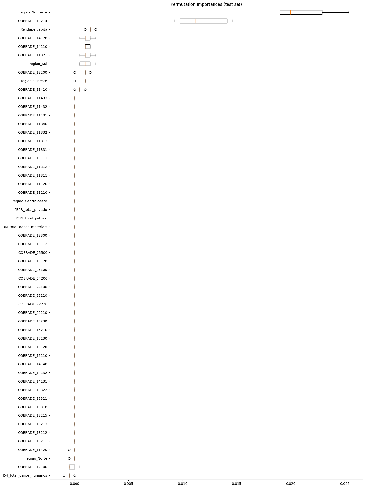

Variáveis agregadas (2010 a 2017)#
Bibliotecas e base de dados#
Show code cell source
# Importar bibliotecas
import pandas as pd
from sklearn.model_selection import GridSearchCV
import xgboost as xgb
from sklearn.pipeline import Pipeline
from imblearn.over_sampling import SMOTE
from sklearn.model_selection import train_test_split
from sklearn import metrics
from skopt import BayesSearchCV
from sklearn import metrics
from sklearn.preprocessing import RobustScaler
from sklearn.metrics import ConfusionMatrixDisplay
from sklearn.inspection import permutation_importance
import matplotlib.pyplot as plt
#Estilizar conteúdo
import warnings
warnings.simplefilter(action='ignore', category=FutureWarning)
pd.set_option('display.max_rows', None)
pd.set_option('display.max_columns', None)
pd.set_option('display.float_format', '{:.2f}'.format)
def estilo_tabelas(df, max_altura='300px', casas_decimais=3):
return (
df.style.set_table_styles(
[
{'selector': 'thead th', 'props': [('font-size', '12px'), ('text-align', 'center'), ('border-bottom', '2px solid #007BFF')]},
{'selector': 'td', 'props': [('font-size', '10px'), ('text-align', 'center'), ('max-height', '40px'), ('white-space', 'nowrap'), ('text-overflow', 'ellipsis'), ('overflow', 'hidden'), ('max-width', '100px')]},
{'selector': 'tr:nth-child(odd)', 'props': [('background-color', '#ffffff')]},
{'selector': 'table', 'props': [('width', '90%'), ('margin-left', 'auto'), ('margin-right', 'auto'), ('border-collapse', 'collapse')]},
{'selector': 'td, th', 'props': [('border', '1px solid #666')]}, # Bordas cinza escuro
]
).set_properties(
**{'border-color': 'darkgray', 'border-style': 'solid', 'border-width': '1px'}
).set_table_attributes(
f'style="height:auto; overflow:auto; max-height:{max_altura}; display:block;"'
).format(
precision=casas_decimais
)
)
# Importar a base de dados
df_eventos_2010_2017_modelo1 = pd.read_csv(
"https://raw.githubusercontent.com/brunagmoura/PrevisorReconhecimento/refs/heads/main/df_eventos_2010_2017_modelo1.csv",
sep=';',
decimal=',',
)
estilo_tabelas(df_eventos_2010_2017_modelo1.head(5))
---------------------------------------------------------------------------
XGBoostError Traceback (most recent call last)
Cell In[1], line 4
2 import pandas as pd
3 from sklearn.model_selection import GridSearchCV
----> 4 import xgboost as xgb
5 from sklearn.pipeline import Pipeline
6 from imblearn.over_sampling import SMOTE
File ~/PrevisorReconhecimento/.venv/lib/python3.9/site-packages/xgboost/__init__.py:6
1 """XGBoost: eXtreme Gradient Boosting library.
2
3 Contributors: https://github.com/dmlc/xgboost/blob/master/CONTRIBUTORS.md
4 """
----> 6 from . import tracker # noqa
7 from . import collective, dask
8 from .core import (
9 Booster,
10 DataIter,
(...)
15 build_info,
16 )
File ~/PrevisorReconhecimento/.venv/lib/python3.9/site-packages/xgboost/tracker.py:9
6 from enum import IntEnum, unique
7 from typing import Dict, Optional, Union
----> 9 from .core import _LIB, _check_call, make_jcargs
12 def get_family(addr: str) -> int:
13 """Get network family from address."""
File ~/PrevisorReconhecimento/.venv/lib/python3.9/site-packages/xgboost/core.py:269
265 return lib
268 # load the XGBoost library globally
--> 269 _LIB = _load_lib()
272 def _check_call(ret: int) -> None:
273 """Check the return value of C API call
274
275 This function will raise exception when error occurs.
(...)
281 return value from API calls
282 """
File ~/PrevisorReconhecimento/.venv/lib/python3.9/site-packages/xgboost/core.py:222, in _load_lib()
220 if not lib_success:
221 libname = os.path.basename(lib_paths[0])
--> 222 raise XGBoostError(
223 f"""
224 XGBoost Library ({libname}) could not be loaded.
225 Likely causes:
226 * OpenMP runtime is not installed
227 - vcomp140.dll or libgomp-1.dll for Windows
228 - libomp.dylib for Mac OSX
229 - libgomp.so for Linux and other UNIX-like OSes
230 Mac OSX users: Run `brew install libomp` to install OpenMP runtime.
231
232 * You are running 32-bit Python on a 64-bit OS
233
234 Error message(s): {os_error_list}
235 """
236 )
237 _register_log_callback(lib)
239 def parse(ver: str) -> Tuple[int, int, int]:
XGBoostError:
XGBoost Library (libxgboost.dylib) could not be loaded.
Likely causes:
* OpenMP runtime is not installed
- vcomp140.dll or libgomp-1.dll for Windows
- libomp.dylib for Mac OSX
- libgomp.so for Linux and other UNIX-like OSes
Mac OSX users: Run `brew install libomp` to install OpenMP runtime.
* You are running 32-bit Python on a 64-bit OS
Error message(s): ["dlopen(/Users/brunamoura/PrevisorReconhecimento/.venv/lib/python3.9/site-packages/xgboost/lib/libxgboost.dylib, 0x0006): Library not loaded: @rpath/libomp.dylib\n Referenced from: <F2F42313-BF4F-3B95-A853-AE1DE94D4C87> /Users/brunamoura/PrevisorReconhecimento/.venv/lib/python3.9/site-packages/xgboost/lib/libxgboost.dylib\n Reason: tried: '/opt/homebrew/opt/libomp/lib/libomp.dylib' (no such file), '/System/Volumes/Preboot/Cryptexes/OS/opt/homebrew/opt/libomp/lib/libomp.dylib' (no such file), '/opt/homebrew/opt/libomp/lib/libomp.dylib' (no such file), '/System/Volumes/Preboot/Cryptexes/OS/opt/homebrew/opt/libomp/lib/libomp.dylib' (no such file)"]
Ajustes da base de dados#
Show code cell source
# Remover linhas com dados ausentes
df_eventos_2010_2017_modelo1 = df_eventos_2010_2017_modelo1.dropna()
estilo_tabelas(df_eventos_2010_2017_modelo1.head(5))
# Remover registros em que todos os dados informados são 0
df_eventos_2010_2017_modelo1 = df_eventos_2010_2017_modelo1[
~((df_eventos_2010_2017_modelo1['DH_total_danos_humanos'] == 0) &
(df_eventos_2010_2017_modelo1['DM_total_danos_materiais'] == 0) &
(df_eventos_2010_2017_modelo1['PEPL_total_publico'] == 0) &
(df_eventos_2010_2017_modelo1['PEPR_total_privado'] == 0))
]
Show code cell source
# Balanceamento da variável target
status_counts = df_eventos_2010_2017_modelo1['Status'].value_counts()
print("\nBalanceamento da variável 'Status':")
display(status_counts)
Balanceamento da variável 'Status':
Status
0 9156
1 1095
Name: count, dtype: int64
Modelo sem balanceamento#
Treino e teste#
Show code cell source
X_2010_2017_modelo1 = df_eventos_2010_2017_modelo1.drop('Status', axis=1)
y_2010_2017_modelo1 = df_eventos_2010_2017_modelo1['Status']
X_train_2010_2017_modelo1, X_test_2010_2017_modelo1, y_train_2010_2017_modelo1, y_test_2010_2017_modelo1 = train_test_split(X_2010_2017_modelo1, y_2010_2017_modelo1, test_size=0.2, random_state=1, stratify=y_2010_2017_modelo1)
Treinamento sem balanceamento#
Inicialmente, o modelo foi treinado sem balanceamento e utilizando-se a busca de hiperparâmetros bayesiana com o objetivo de testar os hiperparâmetros. O teste foi feito a partir dos hiperparâmetros sugeridos por Thakur (2020).
Show code cell source
# Definir hiperparâmetros para a busca bayesiana
param_grid_bayes = {
'xgb__eta': [0.01, 0.015, 0.025, 0.05, 0.1], # Taxa de aprendizado
'xgb__gamma': [0.05, 0.1, 0.3, 0.5, 0.7, 0.9, 1.0], # Redução mínima da perda
'xgb__max_depth': [3, 5, 7, 9, 12, 15, 17, 25], # Profundidade da árvore
'xgb__min_child_weight': [1, 3, 5, 7], # Peso mínimo para divisão do nó
'xgb__subsample': [0.6, 0.7, 0.8, 0.9, 1.0], # Subamostragem para treinamento
'xgb__colsample_bytree': [0.6, 0.7, 0.8, 0.9, 1.0], # Subamostragem de colunas
'xgb__lambda': [0.01, 0.1, 1.0], # Regularização L2
'xgb__alpha': [0, 0.1, 0.5, 1.0] # Regularização L1
}
# Criar pipeline com RobustScaler e XGBoost Classifier
pipeline_xgb = Pipeline([
('scaler', RobustScaler()), # Alterado para RobustScaler
('xgb', xgb.XGBClassifier(random_state=1, eval_metric='logloss'))
])
# Realizar a busca bayesiana com validação cruzada
bayes_search_xgb = BayesSearchCV(
pipeline_xgb,
search_spaces=param_grid_bayes,
n_iter=30,
cv=3,
scoring='f1_weighted',
n_jobs=-1,
random_state=1
)
# Ajustar a busca bayesiana ao conjunto de treino
bayes_search_xgb.fit(X_train_2010_2017_modelo1, y_train_2010_2017_modelo1)
# Melhor modelo encontrado
best_xgb_model = bayes_search_xgb.best_estimator_
# Exibir os melhores hiperparâmetros
print(f"Melhores hiperparâmetros: {bayes_search_xgb.best_params_}")
# Fazer previsões com o conjunto de teste
y_pred_xgb = best_xgb_model.predict(X_test_2010_2017_modelo1)
# Relatório de classificação
classification_report_xgb = metrics.classification_report(y_test_2010_2017_modelo1, y_pred_xgb, digits=6, target_names=['Reconhecido', 'Não reconhecido'])
print('Classification report para XGBoost: \n')
print(classification_report_xgb)
Melhores hiperparâmetros: OrderedDict([('xgb__alpha', 0.1), ('xgb__colsample_bytree', 0.9), ('xgb__eta', 0.1), ('xgb__gamma', 1.0), ('xgb__lambda', 0.01), ('xgb__max_depth', 7), ('xgb__min_child_weight', 3), ('xgb__subsample', 0.7)])
Classification report para XGBoost:
precision recall f1-score support
Reconhecido 0.903932 0.991266 0.945587 1832
Não reconhecido 0.619048 0.118721 0.199234 219
accuracy 0.898098 2051
macro avg 0.761490 0.554994 0.572410 2051
weighted avg 0.873513 0.898098 0.865894 2051
Show code cell source
ConfusionMatrixDisplay.from_estimator(best_xgb_model, X_test_2010_2017_modelo1, y_test_2010_2017_modelo1, values_format='d', cmap='Blues', display_labels=['Reconhecido', 'Não reconhecido'])
<sklearn.metrics._plot.confusion_matrix.ConfusionMatrixDisplay at 0x11ff71b50>
Modelo com balanceamento SMOTE#
Treinamento do modelo com balanceamento SMOTE e utilizando-se a busca de hiperparâmetros bayesiana com o objetivo de testar os hiperparâmetros. O teste foi feito a partir dos hiperparâmetros sugeridos por Thakur (2020).
Treino e teste#
Show code cell source
X_smote = df_eventos_2010_2017_modelo1.drop('Status', axis=1)
y_smote = df_eventos_2010_2017_modelo1['Status']
X_train_smote, X_test_smote, y_train_smote, y_test_smote = train_test_split(X_smote, y_smote, test_size=0.2, random_state=1, stratify=y_smote)
Treinamento com balanceamento SMOTE#
Show code cell source
# Aplicar SMOTE apenas no conjunto de treino
smote = SMOTE(random_state=1)
X_train_smote, y_train_smote = smote.fit_resample(X_train_smote, y_train_smote)
# Definir hiperparâmetros para a busca bayesiana
param_grid_bayes = {
'xgb__eta': [0.01, 0.015, 0.025, 0.05, 0.1],
'xgb__gamma': [0.05, 0.1, 0.3, 0.5, 0.7, 0.9, 1.0],
'xgb__max_depth': [3, 5, 7, 9, 12, 15, 17, 25],
'xgb__min_child_weight': [1, 3, 5, 7],
'xgb__subsample': [0.6, 0.7, 0.8, 0.9, 1.0],
'xgb__colsample_bytree': [0.6, 0.7, 0.8, 0.9, 1.0],
'xgb__lambda': [0.01, 0.1, 1.0],
'xgb__alpha': [0, 0.1, 0.5, 1.0]
}
# Criar pipeline com RobustScaler e XGBoost Classifier
pipeline_xgb_smote = Pipeline([
('scaler', RobustScaler()), # Usando RobustScaler
('xgb', xgb.XGBClassifier(random_state=1, eval_metric='logloss'))
])
# Realizar a busca bayesiana com validação cruzada no conjunto balanceado pelo SMOTE
bayes_search_xgb_smote = BayesSearchCV(
pipeline_xgb_smote,
search_spaces=param_grid_bayes,
n_iter=30,
cv=3,
scoring='f1_weighted',
n_jobs=-1,
random_state=1
)
# Ajustar o modelo ao conjunto de treino balanceado
bayes_search_xgb_smote.fit(X_train_smote, y_train_smote)
# Melhor modelo encontrado
best_xgb_model_smote = bayes_search_xgb_smote.best_estimator_
# Exibir os melhores hiperparâmetros
print(f"Melhores hiperparâmetros com balanceamento smote: {bayes_search_xgb_smote.best_params_}")
# Fazer previsões com o conjunto de teste original
y_pred_xgb_smote = best_xgb_model_smote.predict(X_test_smote)
# Relatório de classificação
classification_report_xgb_smote = metrics.classification_report(
y_test_smote, y_pred_xgb_smote, digits=6, target_names=['Reconhecido', 'Não reconhecido']
)
print('Classification report para XGBoost com SMOTE: \n')
print(classification_report_xgb_smote)
Melhores hiperparâmetros com balanceamento smote: OrderedDict([('xgb__alpha', 0), ('xgb__colsample_bytree', 0.7), ('xgb__eta', 0.1), ('xgb__gamma', 0.3), ('xgb__lambda', 0.01), ('xgb__max_depth', 25), ('xgb__min_child_weight', 1), ('xgb__subsample', 0.9)])
Classification report para XGBoost com SMOTE:
precision recall f1-score support
Reconhecido 0.907503 0.963974 0.934886 1832
Não reconhecido 0.371429 0.178082 0.240741 219
accuracy 0.880059 2051
macro avg 0.639466 0.571028 0.587813 2051
weighted avg 0.850262 0.880059 0.860767 2051
Show code cell source
ConfusionMatrixDisplay.from_estimator(bayes_search_xgb_smote, X_test_smote, y_test_smote,
values_format='d', cmap='Blues', display_labels=['Reconhecido', 'Não reconhecido'])
<sklearn.metrics._plot.confusion_matrix.ConfusionMatrixDisplay at 0x11f896c10>

Avaliação das Variáveis de Importância#
Avaliação das variáveis de importância de acordo com o modelo com Smote, que apresentou o maior f1-score.
Feature importance#
# Ajustar o melhor modelo encontrado (depois da busca bayesiana)
best_xgb_model_smote.named_steps['xgb'].fit(X_train_smote, y_train_smote)
# Obter o booster (árvores) do modelo treinado
booster = best_xgb_model_smote.named_steps['xgb'].get_booster()
# Obter a importância das features com base no ganho
importance_dict = booster.get_score(importance_type='gain')
# Transformar em DataFrame para organizar como tabela
importance_df = pd.DataFrame({
'Feature': list(importance_dict.keys()),
'Importance': list(importance_dict.values())
})
# Ordenar pela importância em ordem decrescente
importance_df = importance_df.sort_values(by='Importance', ascending=False)
estilo_tabelas(importance_df)
| Feature | Importance | |
|---|---|---|
| 5 | regiao_Nordeste | 105.745 |
| 7 | regiao_Sudeste | 57.251 |
| 8 | regiao_Sul | 39.124 |
| 6 | regiao_Norte | 19.478 |
| 21 | COBRADE_13214 | 16.417 |
| 10 | COBRADE_11331 | 14.150 |
| 14 | COBRADE_12100 | 12.752 |
| 26 | COBRADE_14120 | 11.765 |
| 15 | COBRADE_12200 | 11.247 |
| 23 | COBRADE_13310 | 10.552 |
| 25 | COBRADE_14110 | 10.339 |
| 22 | COBRADE_13215 | 7.794 |
| 27 | COBRADE_14131 | 7.479 |
| 4 | regiao_Centro-oeste | 6.556 |
| 17 | COBRADE_13112 | 5.738 |
| 20 | COBRADE_13213 | 5.638 |
| 28 | COBRADE_14132 | 5.403 |
| 24 | COBRADE_13322 | 4.939 |
| 19 | COBRADE_13212 | 4.054 |
| 16 | COBRADE_12300 | 3.928 |
| 12 | COBRADE_11420 | 3.435 |
| 13 | COBRADE_11433 | 3.088 |
| 9 | COBRADE_11321 | 2.957 |
| 29 | COBRADE_15110 | 2.597 |
| 11 | COBRADE_11410 | 2.429 |
| 1 | DM_total_danos_materiais | 2.251 |
| 3 | PEPR_total_privado | 2.248 |
| 18 | COBRADE_13211 | 1.995 |
| 2 | PEPL_total_publico | 1.977 |
| 30 | COBRADE_15230 | 1.922 |
| 31 | Rendapercapita | 1.909 |
| 0 | DH_total_danos_humanos | 1.774 |
Permutation importance#
Show code cell source
# Calcular a permutação de importância no conjunto de teste
result = permutation_importance(best_xgb_model_smote, X_test_smote, y_test_smote, n_repeats=5, random_state=1, n_jobs=-1)
# Ordenar os resultados pela importância média
sorted_idx = result.importances_mean.argsort()
# Gráfico boxplot para mostrar a importância das variáveis
fig, ax = plt.subplots()
ax.boxplot(result.importances[sorted_idx].T, vert=False, tick_labels=X_test_smote.columns[sorted_idx])
ax.set_title("Permutation Importances (test set)")
fig.set_size_inches(15, 20)
fig.tight_layout()
plt.show()
